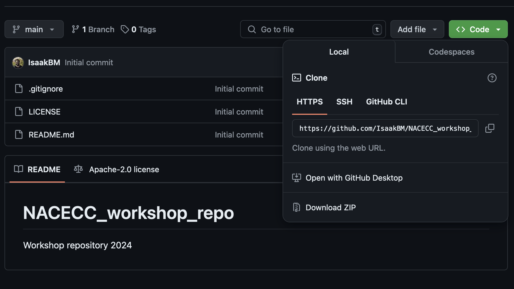
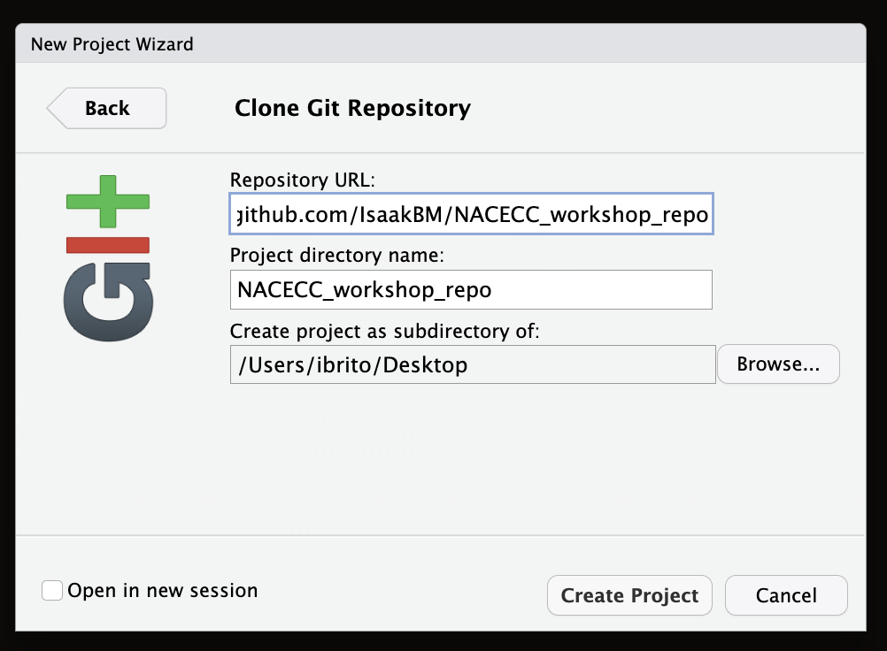
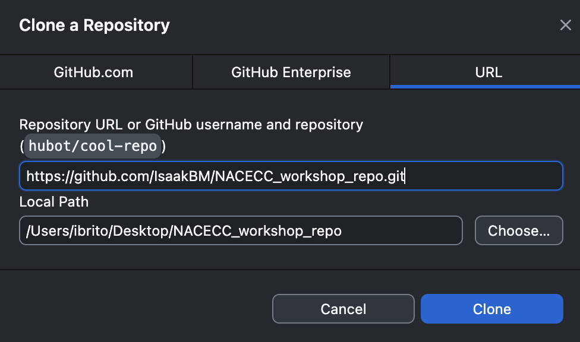
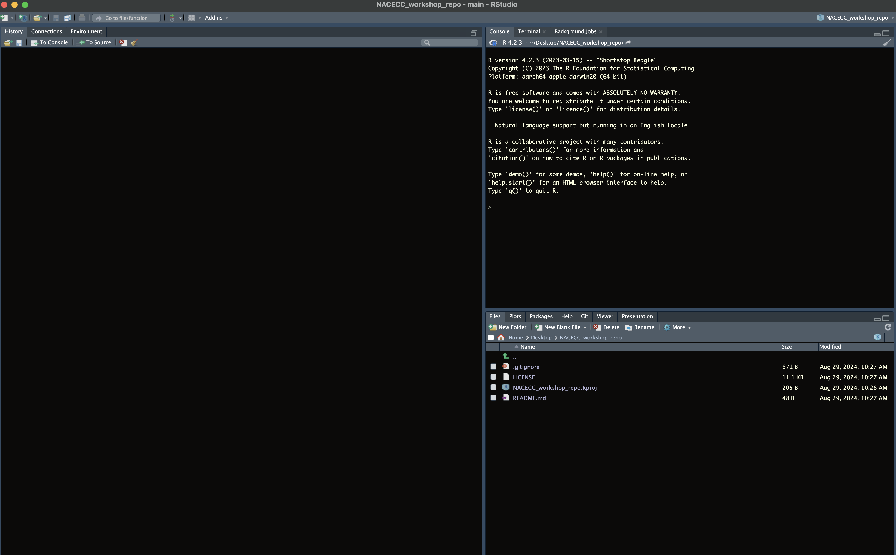
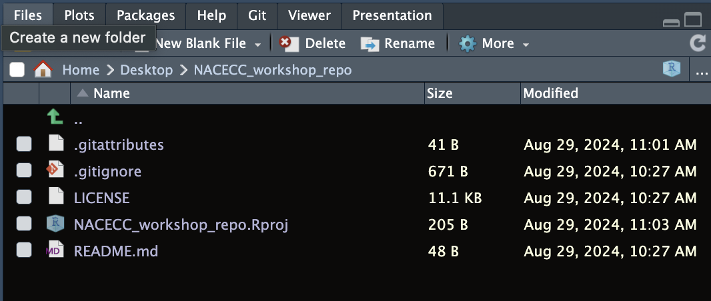

4 Getting Started: workshop repository
To make it easier for everyone to work during this workshop, we have created a repository that you can clone to your local computer. This repository contains:
- Climate data that we will manipulate.
- Code chunks that we will use and explain line by line.
- General information to help you gain a deeper understanding of how to work with climate datasets in R.
Feel free to clone the repository and explore the contents to prepare for the workshop!
4.1 clone the workshop repository
There are several ways to clone a repository. Here, I’ll show you two easy methods: using the RStudio console and the GitHub Desktop app. You can also clone a repository using the terminal and command line, but we won’t cover that method in this workshop as it’s outside our scope—although, I’ve included a little tip below on how to do it! :-)
clone a GitHub repository using the terminal:
- Open the Terminal
- Windows: Press
Win + R, typecmd, and press Enter. Alternatively, useGit Bashif you have it installed. - macOS: Press
Cmd + Space, type Terminal, and press Enter. - Linux: Open the terminal from the applications menu or press
Ctrl + Alt + T.
- Navigate to the Directory Where You Want to Clone the Repository
- Use the cd command to navigate to the directory where you want to clone the repository. For example:
cd path/to/your/directory
- Copy the Repository URL
- Go to the GitHub repository you want to clone: https://github.com/IsaakBM/NACECC_workshop_repo
- Click the green “Code” button and copy the URL (either HTTPS or SSH).
- Clone the Repository
- In the terminal, use the
git clonecommand followed by the repository URL. For example:git clone https://github.com/IsaakBM/NACECC_workshop_repo.git
- Navigate into the Cloned Repository
- Once the repository is cloned, navigate into its directory:
cd NACECC_workshop_repo.git
- Verify the Clone
- To verify that the repository has been cloned successfully, list the contents of the directory:
ls -l
4.1.1 Using the RStudio tool
To clone a repository using the RStudio, first go to the GitHub repository of the workshop https://github.com/IsaakBM/NACECC_workshop_repo and click the green “Code” button and copy the URL.
The next steps will look similar to those you followed when first creating an R Project, with a slight difference. Follow the instructions in the Setup box below to clone your remote repository to your local computer in RStudio:
Setup using RStudio
- Click File > New Project
- Select Version Control and paste the remote repository URL (which should be copied to your clipboard) in the Repository ULR field
- Press Tab, which will auto-fill the Project directory name field with the same name as that of your remote repo – while you can name the local copy of the repository anything, it’s typical (and highly recommended) to use the same name as the GitHub repository to maintain the correspondence

4.1.2 Using the Github Desktop app
Follow the instructions in the Setup box below to clone your remote repository to your local computer using the GitHub Desktop app:
Setup using Github Desktop app
- Open GitHub Desktop.
- Click on File > Clone Repository.
- In the Clone a Repository dialog, go to the URL tab.
- Paste the remote repository URL (which should be copied to your clipboard) into the URL field.
- Choose the Local Path where you want to save the cloned repository. You can click Choose… to select a specific folder.
- Click Clone to create a local copy of the repository on your computer.

4.1.3 Files in the clone repository
Depending on how your version of RStudio is configured, the location and size of the panes may differ, but they should all be present – you should see a Git tab, as well as the Files tab, where you can view all of the files copied from the remote repo to this local repo.

You’ll note that there is one new NACECC_workshop_repo.Rproj, and three files that we created earlier on GitHub (.gitignore, LICENSE, and README.md).
about the new
Git files created
A
.gitignore: This file lists the files and directories thatGitshould ignore. It prevents unnecessary or sensitive files (like temporary files or local configuration files) from being tracked in your repository.LICENSE: This file specifies the legal terms under which others can use, modify, and distribute your code. It’s important to include a license to clarify the permissions for using your project.README.md: This file provides an overview of your project, including what it does, how to install or use it, and any other relevant information. It’s usually the first file people read when they visit your repository.
4.2 Git large file system
Git and GitHub are not intended to be platforms for storing data, but rather for developing software, creating reproducible analyses, and facilitating collaboration. However, as scientists (and I admit, I do this myself), we often store data for our projects, papers, etc., in repositories.
Keep in mind that GitHub has a file size limit of 100 MB per file when uploading via the web interface and 2 GB per file when using Git. It’s generally recommended to keep your repository size under 1 GB to ensure good performance.
To handle larger files more effectively, we can use Git Large File Storage (LFS), which allows us to store pointers to large files in the repository while keeping the actual data stored elsewhere, providing more flexibility for managing larger datasets.
Setup
Git LFS files
- Open Terminal
- Navigate to your repository by changing the working directory to where your repository is located:
cd /Users/ibrito/Desktop/NACECC_workshop- Track files with
Git LFS: To associate a specific file type withGit LFS, use thegit lfstrack command followed by the file extension. For example, to track netCDF file (i.e.,.ncfile):
git lfs track "*.nc"- Repeat for each file type you want to track. This command will update your repository’s
.gitattributesfile to handle large files efficiently withGit LFS.
In RStudio, your project should now include a .gitattributes file, which will appear in your file list.

installing
Git LFS on macOS and Windows:
- macOS
- Open the Terminal.
- Install Git LFS using Homebrew or MacPorts:
brew install git-lfs
port install git-lfs- Initialize Git LFS:
git lfs install- Windows
- Go to the Git LFS website
- Download the Git LFS installer for Windows
- Run the installer and follow the on-screen instructions
- Open the terminal (Command Prompt or Git Bash) and run:
git lfs install